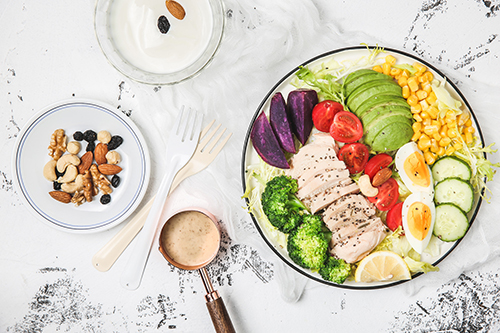

PET-CT检查后饮食需要注意什么？目前，影像学检查中属CT、MRI、PET-CT三种检查方式最为先进。其中，CT和PET-CT对人体会产生一定的辐射，所以在完成检查后，最好在饮食等方面多多加注意，以便尽快将检查对身体造成的辐射给化解：
1、PET-CT检查后多吃抗辐射食物：可在检查前后进食紫菜、海带、黑木耳、大蒜、黑芝麻等可降低辐射影响的食物。
2、PET-CT检查后喝些绿茶与蜂蜜：绿茶可以加快体内放射性物质的排泄，而蜂蜜可以提高机体抗辐射损伤的耐力。
3、PET-CT检查后注意补充蛋白质：PET-CT检查结束后可以适当补充一些优质蛋白质，可以减轻放射损伤，促进恢复，还可增强机体对辐射的抵抗力。如鸡蛋、瘦肉、鱼、牛奶、大豆、动物内脏等食物都含有很优质的蛋白质。
4、PET-CT检查后要多喝水：一般来说，PET-CT检查所用的放射性药物的半衰期很短，而且具有很高的敏感度，注射入人体的放射性药物很微量，对人体基本不构成任何伤害。受检者只需要在检查结束后大量饮水，就可以促进示踪剂随尿液迅速排出体外。
以上就是关于“PET-CT检查后饮食”的内容。严格来说，虽然PET-CT检查是会对人体造成一定的辐射，但相较于CT所带来的辐射要小得多，通常24小时内就可以代谢完，所以大家不比过度担心。